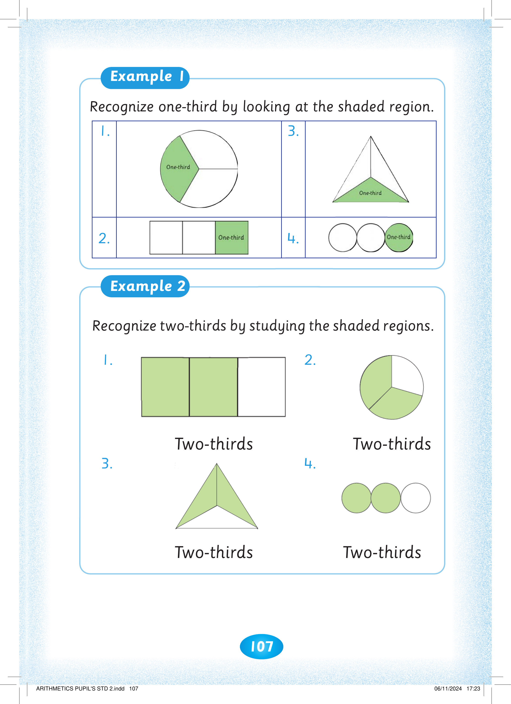
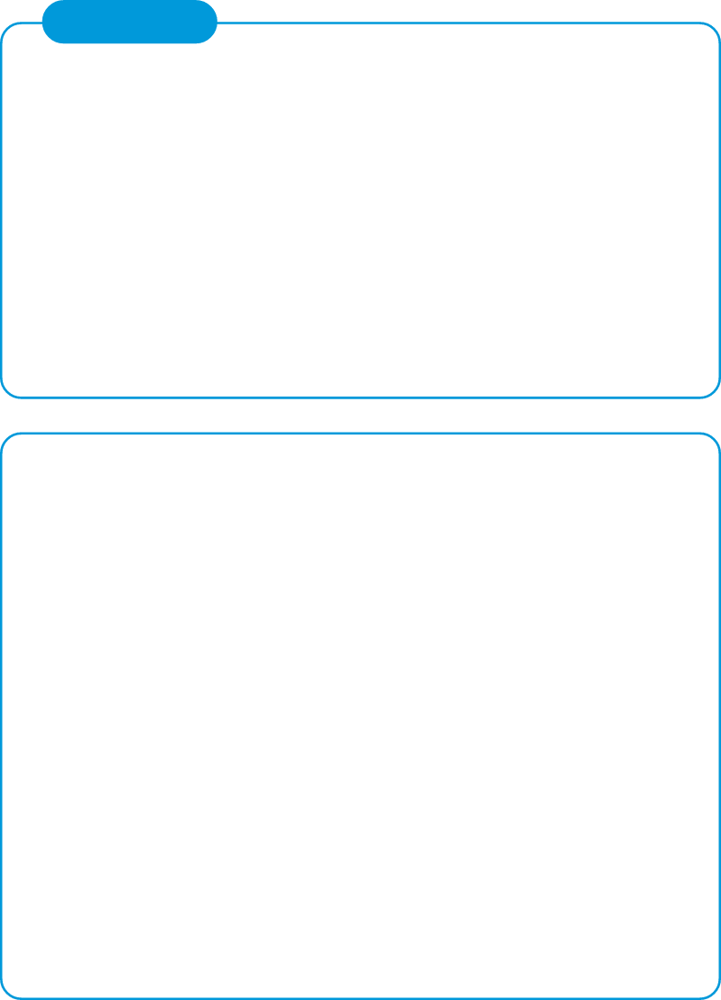
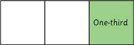
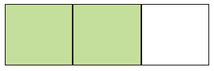
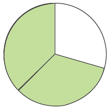
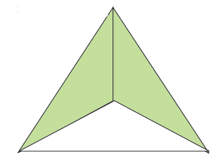

107



Example 1. Recognize one-third by looking at the shaded region. 1. A circle is divided into three equal parts, with one part shaded green to show one-third. 2. A rectangle is divided into three equal parts, with the right-hand part shaded green to show one-third. 3. A triangle is divided into three equal parts, with the bottom part shaded green to show one-third. 4. Three equal circles are in a row, with the right-hand circle shaded green to show one-third.


Recognize one-third by looking at the shaded region.
1.

3.

2.

4.

Example 2. Recognize two-thirds by studying the shaded regions. 1. A rectangle is divided into three equal parts, with the first two parts shaded green to show two-thirds. 2. A circle is divided into three equal parts, with two parts shaded green to show two-thirds. 3. A triangle is divided into three equal parts, with the left and right parts shaded green to show two-thirds. 4. Three equal circles are in a row, with the first two shaded green to show two-thirds.
Recognize two-thirds by studying the shaded regions.
1.

Two-thirds
2.

Two-thirds
3.

Two-thirds
4.

Two-thirds


ARITHMETICS PUPIL'S STD 2.indd 107
06/11/2024 17:23